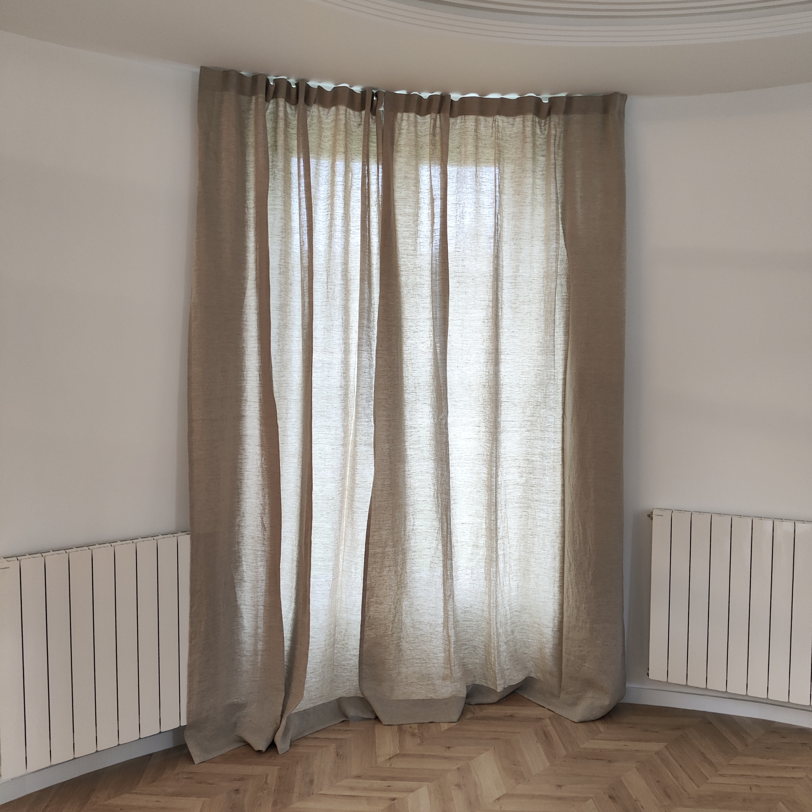
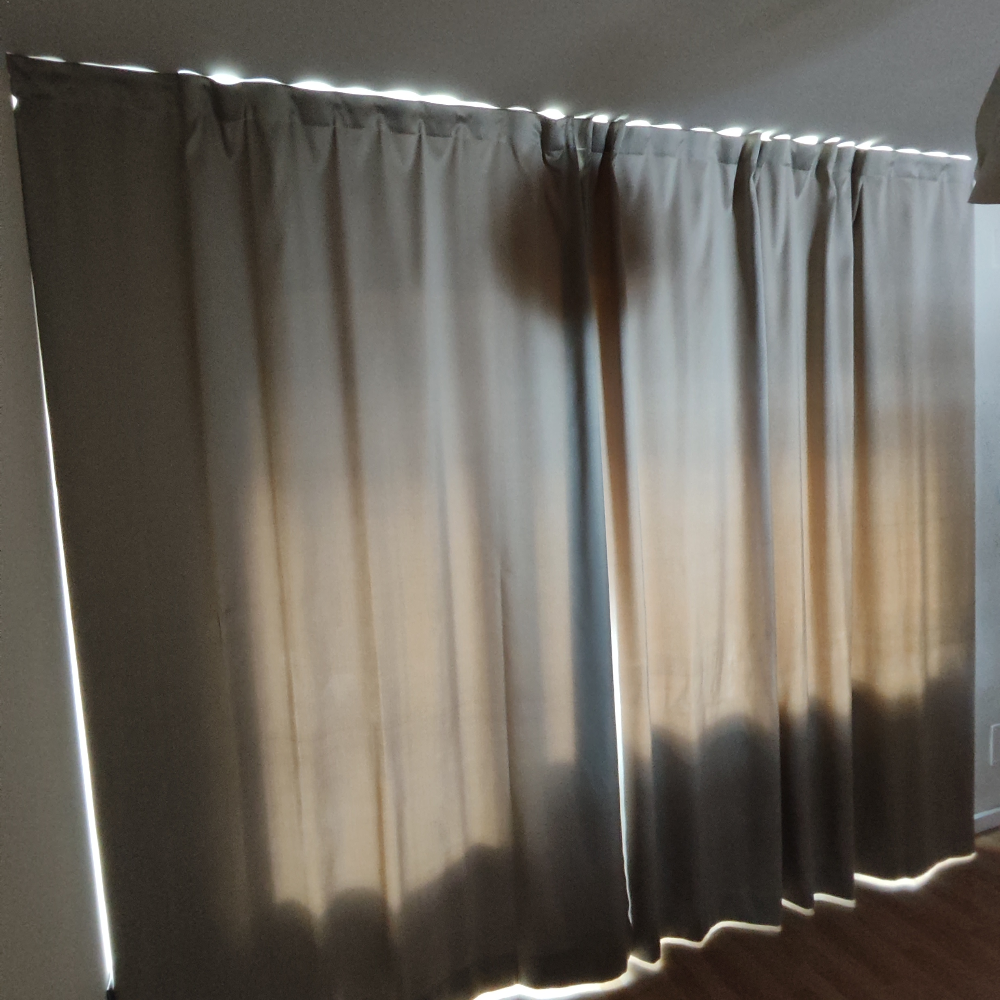
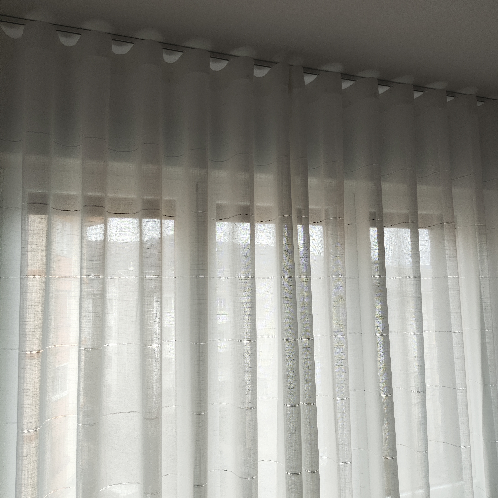
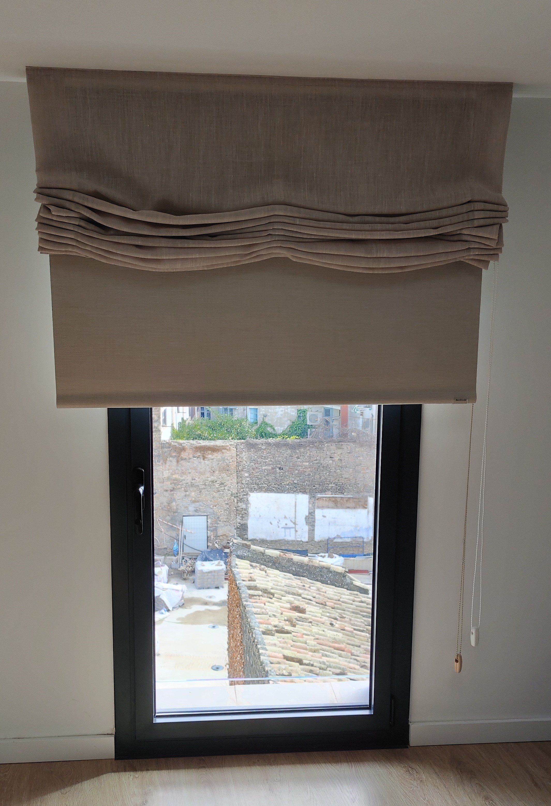
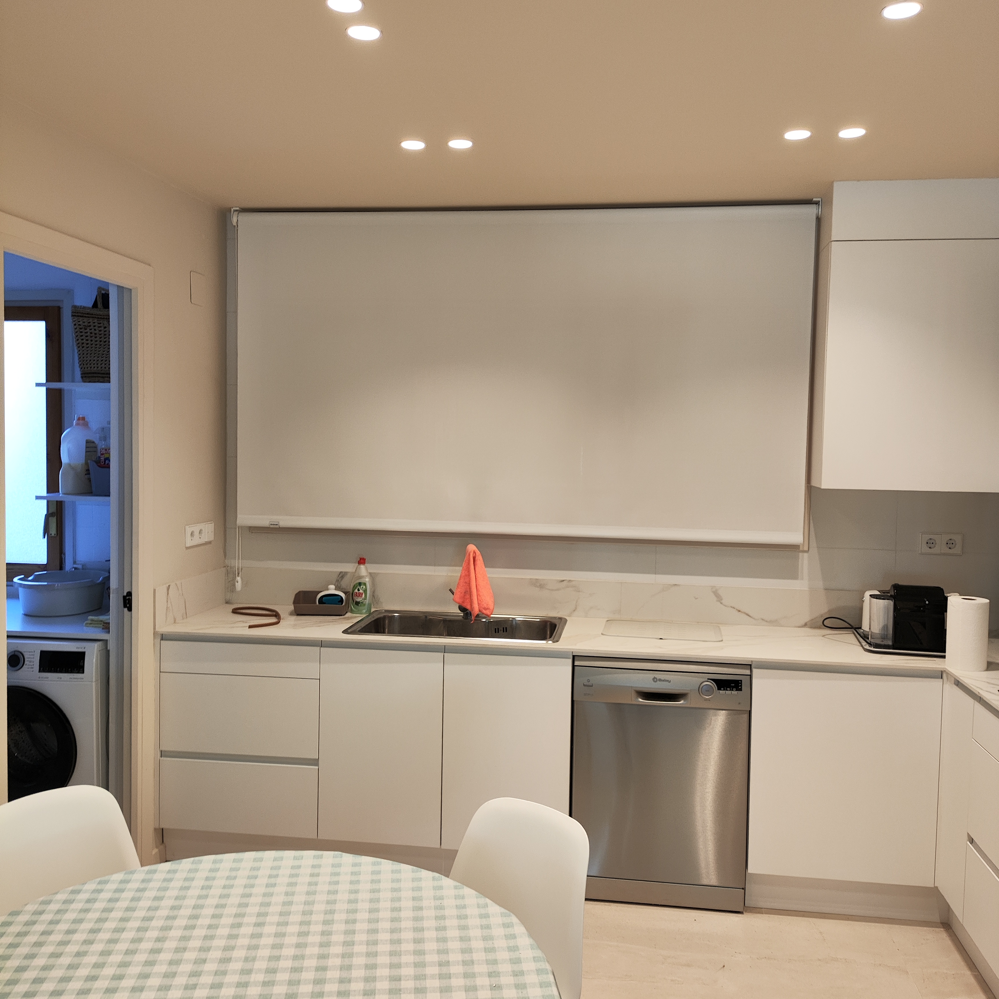
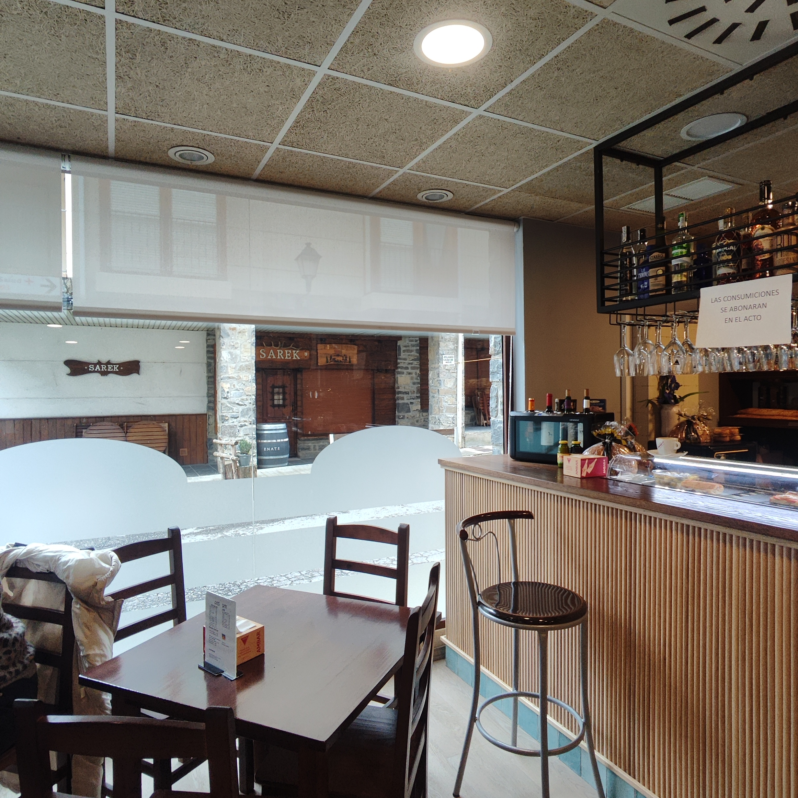
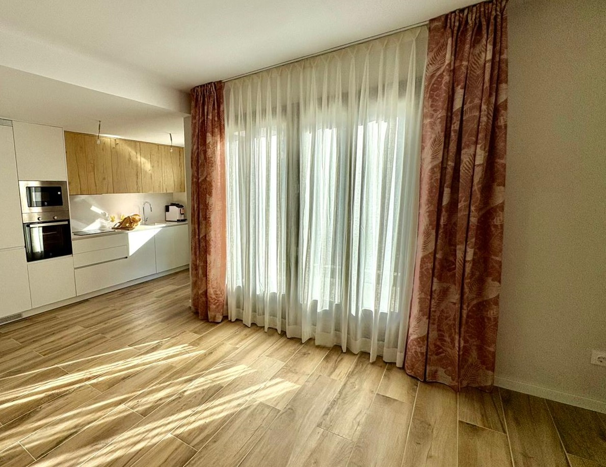
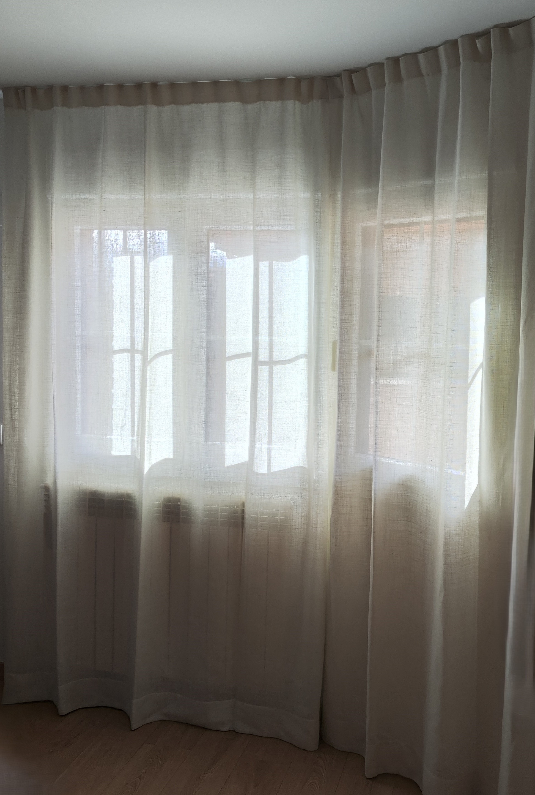
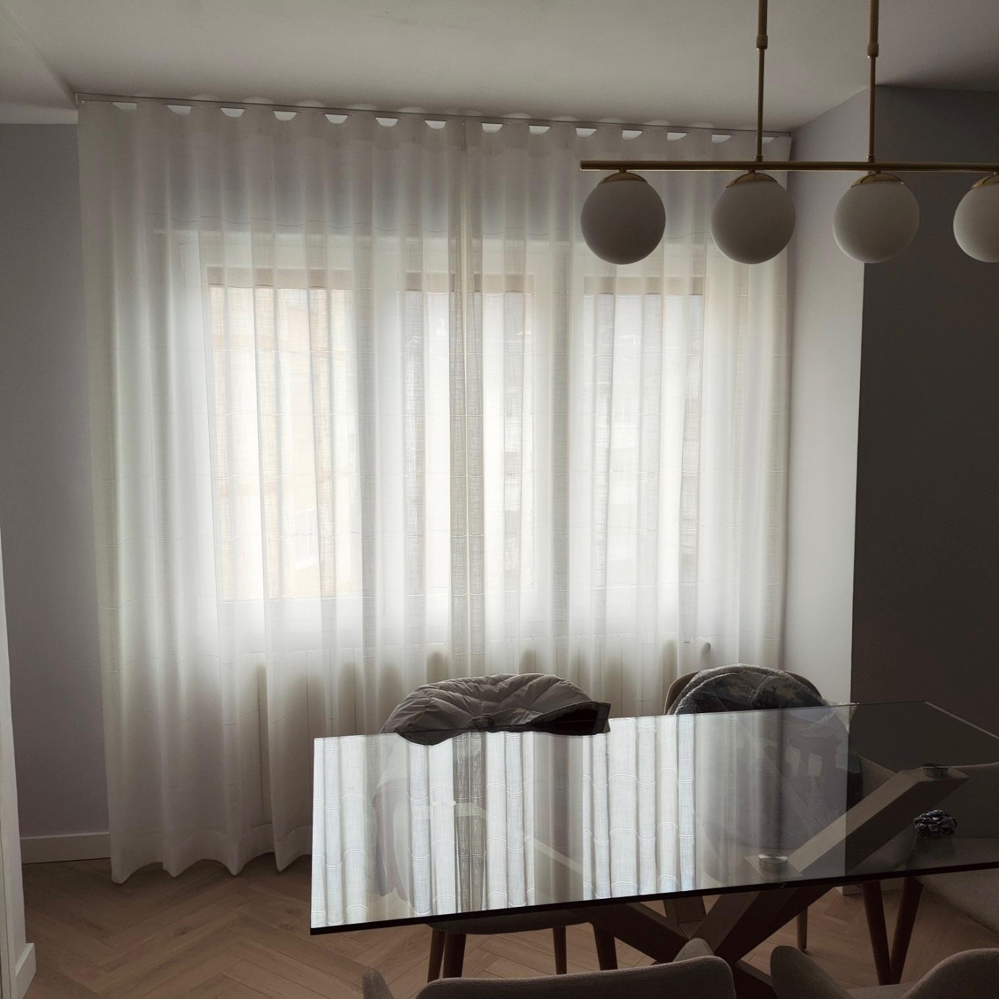

LinoLino natural
Tejido de lino 100% natural, caída fluida y textura mate. Ideal para salones del Pirineo con luz natural abundante.
Ver detalleUna selección de tipologías y acabados que confeccionamos en nuestro taller de Jaca. Filtra por tipología o ven al showroom a verlas en muestrario físico.

LinoTejido de lino 100% natural, caída fluida y textura mate. Ideal para salones del Pirineo con luz natural abundante.
Ver detalle
OpacoTejido blackout que bloquea la luz al 100%. Forrado en lino o algodón visto por el lado interior. Indispensable en dormitorios principales.
Ver detalle
VisilloVisillo en gasa o lino fino para tamizar la luz sin oscurecer. Se combina con cortina opaca o decorativa en doble riel.
Ver detalle
PaquettoEstor de pliegues blandos sin varillas. Caída suave que envuelve la ventana. Funciona muy bien en cocinas y baños amplios.
Ver detalle
EnrollableEstor técnico de tejido screen, antimanchas, ideal para cocinas. Disponible con cofre superior y guías laterales.
Ver detalle
ContratoTejido ignífugo M1 con certificación contract. Para hoteles, restaurantes y casas rurales. Alta resistencia al uso.
Ver detalle
Doble cortinaCombinación clásica para grandes ventanales: visillo interior y cortina decorativa exterior. Control de luz total.
Ver detalle
Onda perfectaSistema wave con ondas regulares y caída idéntica de arriba abajo. La confección que mejor define el textil contemporáneo.
Ver detalle
Lino claroCortina ligera de lino claro para dormitorios que no requieren oscurecimiento total. Caída relajada, mantenimiento sencillo.
Ver detalleEl catálogo digital es solo una muestra. En el showroom puedes tocar los tejidos, ver la caída a tamaño real y comparar bajo distintas luces. También llevamos los muestrarios a tu domicilio sin compromiso.